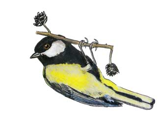

Great Tit
Resident breeding bird.

05/06/98 - Single bird, carrying food.
1999 - 7 pairs bred in nest boxes.
2014 - nested - family party of 6 seen on 13/08
2017 - nested - up to 6 birds making use of the cleaned and refilled peanut feeder in the 2nd winter period.